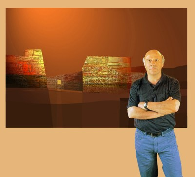

Landscapes under the hidden moon

FERNANDO HOCEVAR
Fernando Hocevar was born in 1944 in Mendoza, Argentina,
and studied architecture at the University of Mendoza. At 33
he began a series of oil paintings entitled "Landscapes in the country
of the calm" and began to accumulate prizes for his work.
In 1997 Hocevar "discovered digital process...without abandoning
the spirit of his work." He has continued to win prizes in Argentina
and internationally for his digital art, including the prestigious Fiorino d'Argento award in Florence, Italy, and the Great Prize of Honor, Toray, Japan, both in the year 2000. His landscapes are bare, cool and ethereal, notable for their iconic and primitive architectural forms and the serene coloring of water and sky.